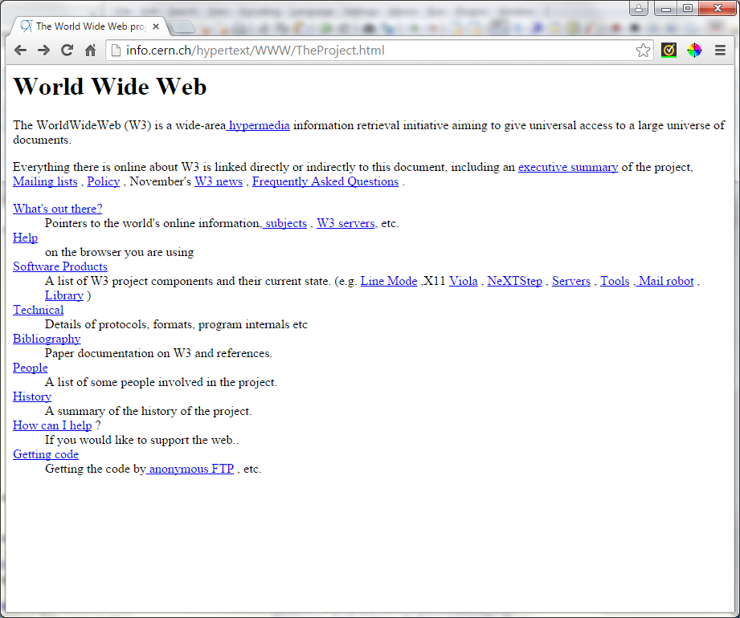

CSS on the Move
Jeremy K. Moritz
Assumptions
For the sake of the course, I'm assuming some familiarity with these concepts:
- Basic HTML
- Basic-to-Intermediate CSS
History
- The early days were about making information available, not about style
- Font and style added in HTML 3.2 (1997)


Image Replacements
Rounded Corners
Over-Rounded Corners
Rounded Corners
Elliptical Corners
Straight
Diagonal
Angle and Transparency
Simple Drop Shadow
With Some Style
But Not Too Much Style
Image Replacements - Shapes
2D Transforms
Original
Original
Original
Original
Click on the transform to see the CSS
transform: translate(30px, 50px);
transform: rotate(45deg);
transform: scale(0.5, 2);
transform: skew(10deg, 25deg);
3D Transform
Original
Click on the transform to see the CSS
.original {
position: relative;
perspective: 150px;
perspective-origin: 20% 20%;
}
.perspective {
position: absolute;
transform: rotateX(45deg);
}
Units of Measure
- http://www.w3schools.com/cssref/css_units.asp
- %, px, cm, mm, in, pt, pc
- em -- relative to the font-size of the element (2em means 2 times the size of the current font)
- ex -- relative to the x-height of the current font
- ch -- relative to width of the "0" (zero)
- rem -- relative to font-size of the root element
- vh, vw -- represents 1% of the height/width of the viewport
- vmin, vmax -- represents to 1% of viewport's smaller/larger dimension
Show / Hide
- :target
- look at the menu on this page
- modal example
- hidden checkbox
Transitions
immediate
hover
hover
with
transition
transition
.transition {
transition: background-color 1s, border-color 1s,
border-style 1s, box-shadow 1s;
}
.immediate, .transition {
border-style: solid;
border-color: #00ff00;
background-color: #ff0000;
}
.immediate:hover, .transition:hover {
border-style: dashed;
border-color: #ffff00;
background-color: #0000ff;
box-shadow: 0px 0px 40px #333333;
}
Animation
Watch the arrow on the right side
Practical example. The transition has been slowed down to 2 seconds.
Thanks!
- Jeremy Moritz
- jmoritz@naic.org